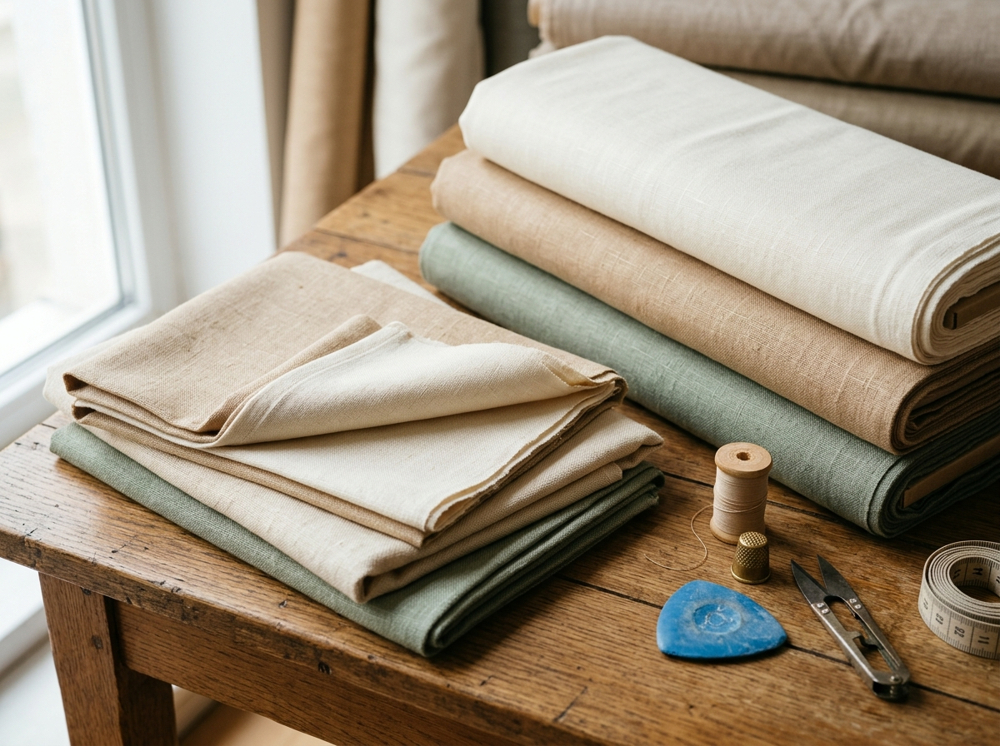

دليل أفضل الأقمشة الشرعية ومعايير فحص العتامة
نختار في «وقار وحياء» نخبة الأقمشة العالمية التي تجمع بين الوقار الشرعي التام، الكثافة العالية التي لا تشف ولا تصف، والبرودة الفائقة لتنعمي بالستر المريح في كل الفصول.

يتم فحص كل رول قماش أمام الإضاءة المباشرة للتأكد من انعدام الشفافية تماماً قبل التفصيل.

مزيج القطن الطبيعي والكتان الصيفي
مصمم لأجواء الصيف الحارة والصلوات الطويلة وأداء مناسك الحج والعمرة. نسيج نقي يسمح بمرور الهواء ويمنع التعرق تماماً.
ألياف قطنية طبيعية فائقة الامتصاص
خيوط قطن وكتان طبيعية 100% تمنح برودة فورية على البشرة وتسمح بتنفس المسام في أشد أيام الصيف حرارة.
مبطن في مناطق الصدر لمزيد من الستر للنساء
طبقة تبطين داخلية مزدوجة في منطقة الصدر والأكتاف تضمن عدم تحديد أي معالم للجسم أثناء الحركة أو الركوع والسجود.
اختبار الشمس: عدم نفاذ أي خيال للجسم
نسيج محكم الغزل يمنع نفاذ الضوء أو ظهور خيال الجسم حتى تحت أشعة الشمس المباشرة.
مقاوم للتجعد وسهل الغسيل
معالج طبيعياً ليحافظ على نعومته وانسداله المرتب بعد الغسيل المتكرر دون انكماش.
مواصفات الأقمشة المختارة في وقار وحياء
كل نسيج لدينا يمر باختبارات صارمة للعتامة، ثبات اللون، ومقاومة التجعد ليضمن لكِ حجاباً شرعياً لا يصف ولا يشف.
1. الكريب الملكي الثقيل (Heavy Royal Crepe)
نسيج غير شفاف إطلاقاً، ذو وزن رصين يعطي انسدالاً وقوراً لا يلتصق بالجسد ولا يتطاير مع الرياح. مثالي للطلعات الرسمية ولعباءات الرأس والبشت.
- check_circle اختبار الشمس: عدم نفاذ أي خيال للجسم
- check_circle مقاوم للتجعد وسهل الغسيل
- check_circle سواد كاحل فاحم ثابت لا يبهت مع الغسيل

2. حرير المدينة وكريب الصالونة الناعم
انسيابية فائقة ولمسة حريرية مطفية غير لامعة، يوفر وقار الخمار الفرنسي والجلباب وانسيابية الحركة اليومية مع برودة ممتازة.
- check_circle اختبار الشمس: عدم نفاذ أي خيال للجسم
- check_circle مقاوم للتجعد وسهل الغسيل
- check_circle خفة وراحة فائقة على الرأس والأكتاف

3. الشيفون الكوري الطبي للنقابات
مصمم خصيصاً للأخوات المنتقبات لساعات طويلة؛ مسامات دقيقة تسمح بتنفس نقي وبارد دون كتم، مع طبقات ساترة لا تشف الوجه إطلاقاً.
- check_circle اختبار الشمس: عدم نفاذ أي خيال للجسم
- check_circle مقاوم للتجعد وسهل الغسيل
- check_circle لطيف على البشرة الحساسة ومتوافق مع النظارات الطبية
جدول مقارنة الأقمشة الشرعية ومعايير العتامة
| نوع النسيج | الكثافة (GSM) | اختبار الشمس والعتامة | التبطين والستر الإضافي | مقاومة التجعد والغسيل | الاستخدام الأمثل |
|---|---|---|---|---|---|
| مزيج القطن الطبيعي والكتان الصيفي | 180 - 210 GSM | ✓ عدم نفاذ أي خيال للجسم (100%) | ✓ مبطن في مناطق الصدر لمزيد من الستر للنساء | ✓ ألياف قطنية فائقة الامتصاص وسهلة الغسيل | الصيف، الصلوات الطويلة، الحج والعمرة |
| الكريب الملكي الياباني الثقيل | 240 - 280 GSM | ✓ عدم نفاذ أي خيال للجسم (100%) | ✓ ثقل طبيعي يمنع الالتصاق (Zero-Cling) | ✓ مقاوم للتجعد وسهل الغسيل بدون كيّ | عباءات الرأس الساترة والبشت الرسمي |
| حرير المدينة الناعم (Medina Silk) | 190 - 220 GSM | ✓ عدم نفاذ أي خيال للجسم (100%) | ✓ قصة كلوش واسعة وطبقات منسدلة | ✓ مقاوم للتجعد وسهل الغسيل | أطقم الخمار الفرنسي والجلباب اليومي |
| الشيفون الكوري الطبي للنقابات | طبقات مزدوجة | ✓ ساتر للوجه 100% بدون شفافية | ✓ أربطة قطنية وخيط عين ناعم مبطن | ✓ غسيل يدوي سريع وجفاف فوري | النقابات الطبية والارتداء الطويل مع النظارات |